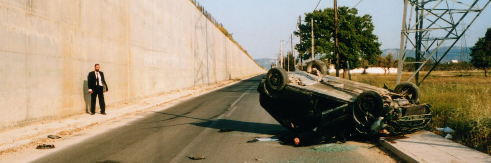
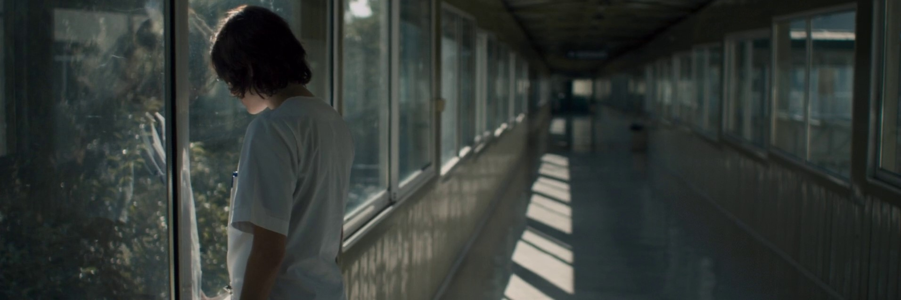
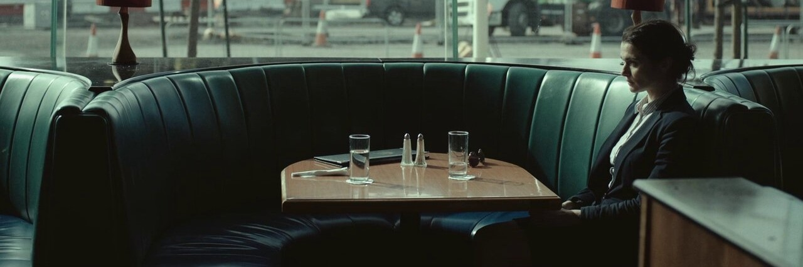
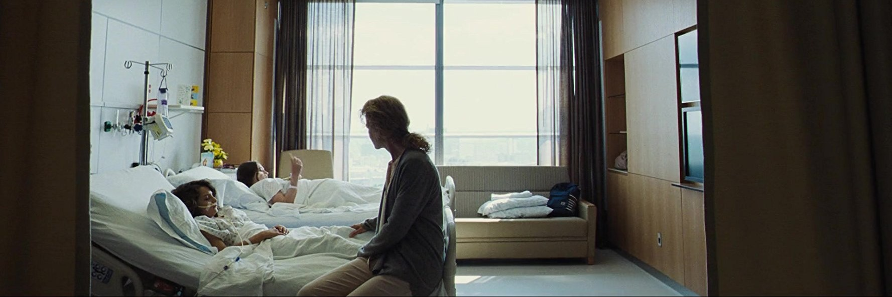
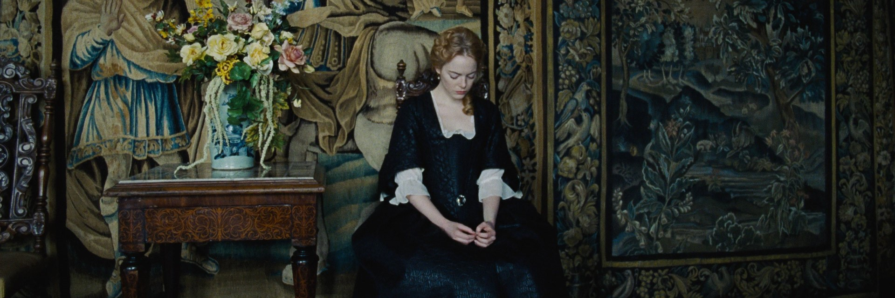
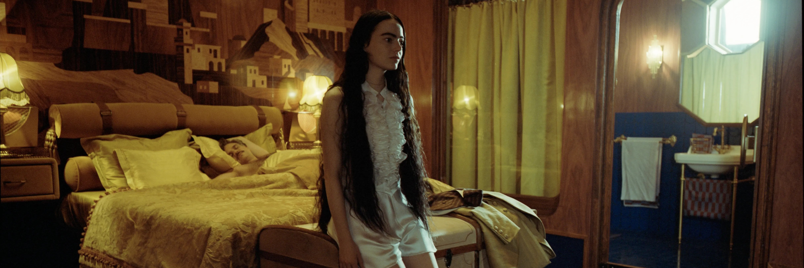

PELICULAS
KINETTA (2005)
En una ciudad balnearia griega, una mucama, un hombre obsesionado con los BMW y un empleado de una casa de fotografía escenifican los asesinatos de un asesino serial. Un experimento de investigación se convierte en una exploración de las profundidades de sus propias obsesiones.
KYNODONTAS (2005)
Una familia griega que vive enclaustrada en su casa. Los tres hijos viven convencidos de que el mundo exterior es territorio prohibido, y su percepción de la realidad está completamente alterada por culpa de sus maquiavélicos padres.
ALPS (2009)
Una enfermera que trabaja por las noches en un hospital se ocupa de atender las necesidades de las familias que han perdido a sus seres queridos. Forma parte de un grupo llamado “Alps”, cuyos miembros ofrecen, a cambio de dinero, reemplazar a los muertos en la vida diaria de esas familias.
THE LOBSTER (2015)
En un futuro en el que la soltería está prohibida, David, un recién divorciado, es arrestado y transferido a un hotel donde debe encontrar pareja en 45 días o, de lo contrario, será transformado en animal y liberado en el bosque. David consigue escapar al bosque y, ahí, conoce a Los Solitarios.
THE KILLING OF A SACRED DEER (2017)
Steven, un eminente cirujano cardiotorácico, preside una casa impecable con su esposa, la oftalmóloga Anna, y sus dos hijos ejemplares. Sus vidas dan un giro oscuro cuando Martin, un adolescente sin padre al que Steven silenciosamente ha tomado bajo su protección, comienza a insinuarse en la vida de la familia.
THE FAVOURITE (2018)
A principios del siglo XVIII, Inglaterra está en guerra con Francia y la reina Anne delega sus responsabilidades en su amiga Lady Sarah porque tiene problemas de salud. La llegada de una sirvienta dotada de un talento especial, Abigaíl, pone en peligro la posición de Sarah.
POOR THINGS (2023)
Bella Baxter es una joven a la que el poco ortodoxo y brillante Dr. Godwin Baxter revivió. Bajo la protección del Doctor, Bella está ansiosa por aprender del mundo y de la vida, motivo por el cual se escapa con Duncan Wedderburn, un astuto abogado.